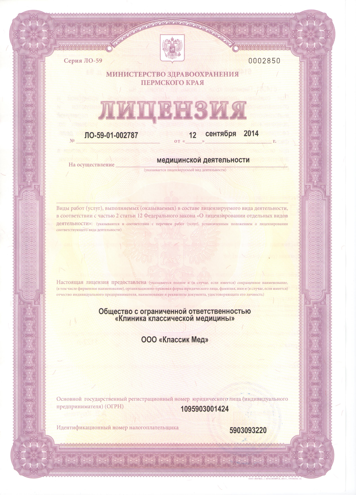
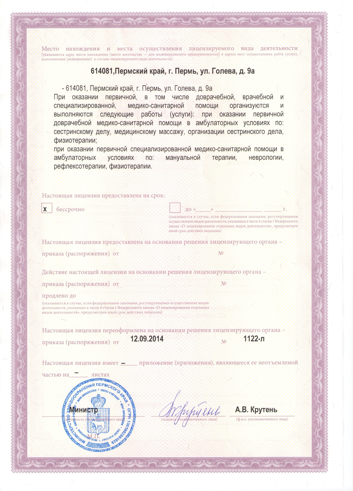

//= include/header.html
О клинике
Врачи
Услуги
Цены
Полезное
Контакты
Полезная информация
Лицензия


Договор
Согласие на обработку персональных данных
Договор возмездного оказания медицинских услуг
Согласие на медиццинское вмешательство
Нормативные документы
Территориальная программа государственных гарантий бесплатного оказания гражданам медицинской помощи на 2016 год и на плановый период 2017 и 2018 годов
Перечень лекарственных препаратов, отпускаемых по рецептам врачей бесплатно
Нормативные документы по правам граждан в системе ОМС на территории Пермского края (откроется в новом окне)
Показатели качества оказания медицинской помощи
Показатели доступности и качества медицинской помощи
Реестр страховых медицинских организаций, осуществляющих деятельность в сфере обязательного медицинского страхования на территории Пермского края
Приказ Министерства здравоохранения РФ от 30 декабря 2014 г. N 956н
ПАМЯТКА беженцам прибывшим с территории УКРАИНЫ
Правила оказания медицинской помощи иностранным гражданам на территории Российской Федерации
Федеральный закон о порядке рассмотрения обращений граждан Российской Федерации
Конституция Российской Федерации (ст.41, 42)
Федеральный закон об обязательном медицинском страховании в Российской Федерации
Федеральный закон об основах охраны здоровья граждан в Российской Федерации
Федеральный закон об обращение лекарствнных средств
Государственная программа на 2016
Приказ №910н от 2012 ОБ УТВЕРЖДЕНИИ ПОРЯДКА ОКАЗАНИЯ МЕДИЦИНСКОЙ ПОМОЩИ ДЕТЯМ)
Приказ №1496н от 2011 ОБ УТВЕРЖДЕНИИ ПОРЯДКА ОКАЗАНИЯ МЕДИЦИНСКОЙ ПОМОЩИ ВЗРОСЛОМУ НАСЕЛЕНИЮ
Приказ Министерства здравоохранения РФ от 20.12.2012 г. N 1175н Основания, порядок и сроки предоставления пациенту либо его законному представителю медицинских документов (их копий) и выписок
Постановление Правительства ПК о внесении изменений в постановление Правительства ПК от 24 декабря 2015г. №1139-п "Об утверждении территориальной программы государственных гарантий бесплатного оказания гражданам медицинской помощи на 2016 год и на плановый период 2017 и 2018 годов"
Постановление от 14 сентября 2016 г №737-п о внесении изменений в территориальную программу государственных гарантий бесплатного оказания гражданам медицинской помощи на 2016 год и на плановый период 2017 и 2018 годов, утвержденную постановлением Правительства Пермского края от 24 декабря 2015г. №1139-ПБ
//= include/footer.html
{kind=link}
{kind=link}